Elasticstack: Centro del análisis y gestión de logs¶
Introducción¶
El sistema de información de una organización, puede estar compuesto por cientos de servidores, con sus sistemas operativos, cada uno con sus diferentes productos que cada uno de ellos genera miles de líneas de logs de la actividad que realizan.
El análisis de logs, entra dentro de la categoría del big data por el volúmen de información de información generada y la gran variedad de estructuras de los datos. Por otro lado, la necesidad de la monitorización de los sistemas en tiempo real, hacen que Elasticsearch y su ecosistema Elasticstack, sea uno de los más utilizados en el mercado. Es capaz mediante sus beats(procesos ligeros en los servidores y sistemas), monitorizar todo tipo de logs, programas y redes de nuestro sistema.
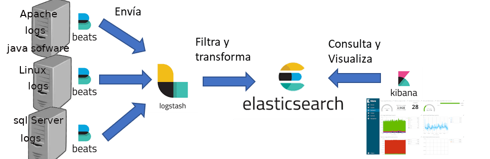
Logs¶
En informática, se usa el término registro, log o historial de log para referirse a la grabación secuencial en un archivo o en una base de datos de todos los acontecimientos (eventos o acciones) que afectan a un proceso particular.
Cada evento, se encuentra definido por:
log = Timestamp(hora del evento) + datos del acontecimiento
Necesidad del control de logs¶
Preservar los logs, puede ser necesario para:
- Solución de problemas: cuando se informa de un error o problema, el primer lugar para buscar qué podría haber causado el problema son los registros. Por ejemplo, al mirar un
seguimiento de la pila de excepciones en los registros, puede encontrar fácilmente la causa raíz del problema.
- Para comprender el comportamiento del sistema/aplicación
- Auditoría: muchas organizaciones deben adherirse a algunos procedimientos de cumplimiento y están obligados a mantener los registros. Por ejemplo, actividad o transacción de inicio de sesión….
- Análisis predictivo: Algunos ejemplos de casos de uso de predictivo: cuando se sugieren películas o artículos para que los usuarios los compren, detectando fraude, optimización de campañas de marketing, etc.
Problemática con los logs¶
Los problemas que nos encontramos con los logs son los siguientes:
- El formato es irregular entre unos y otros recursos que generan logs
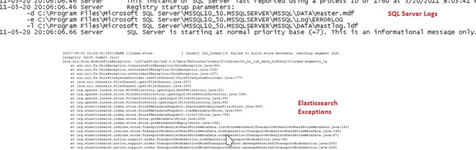
- Los logs están descentralizados: Gran variedad de recursos generan logs y es complicado controlarlos uno por uno.
- Inconsistencia de Fecha/Hora: Cada sistema puede generar el datos de tiempo con formatos diferentes, por lo que puede ser necesario una transformación para su lectura
- Datos desestructurados: Tenemos gran variedad de estructuras que requieren la transformación previa para su análisis.
Ingesta de datos mediante Beats¶
Vamos a realizar una práctica para ver cómo podemos instalar una serie de Beats para la recolección de datos de algunos sistemas. Estos beats, son procesos ligeros que vienen preparados para la recolección de datos de forma predeterminada de muchos sistemas y con una serie de plantillas que nos permiten con poco esfuerzo comenzar a monitorizar los datos desde Kibana. Si necesitamos ajustar y transformar los datos de logs más específicos como puede ser de programas java, tendremos que utilizar Logstash como ETL para la extracción de la información.
Tenemos varios Beats oficiales y otros tantos desarrollados por la comunidad que permiten la extracción de información de los sistemas
https://www.elastic.co/es/downloads/beats/
Por otro lado, tenemos diversos beats desarrollados por la comunidad
https://www.elastic.co/guide/en/beats/devguide/current/community-beats.html
Los beats oficiales más importantes son:
- Metricbeat se utiliza para recopilar las métricas del sistema y las métricas de la aplicación y enviarlas al servidor de Elastic Stack
- Filebeat monitorea los archivos de registro o las ubicaciones que usted especifica, recopila eventos de registro y los reenvía a Elasticsearch o Logstash
- Packetbeat rastrea el tráfico de la red, decodifica protocolos...
- Heartbeat Permite a los clientes saber si uno de los nodos/servicio está presente o ausente
Metricbeat en Ubuntu¶
Introducción¶
Vamos a probar sobre una máquina de ubuntu a monitorizar el sistema y a alguno de sus servicios, como puede ser Mysql y Apache
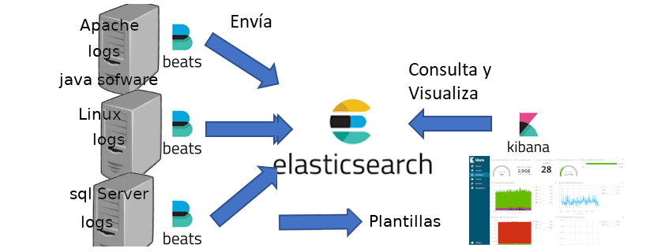
Probaremos de forma básica los beats. Para lo que:
- importaremos las plantillas de dashboard disponibles en el beat a Kibana para visualizar los datos capturados
- activaremos los módulos que nos permiten monitorizar la información de los servicios que nos interesen en ubuntu para que envíe la información a Elasticsearch
- visualizaremos la información en kibana mediante los Dashboard creados por la plantillas.
Configuración de Elasticsearch y Kibana:¶
Vamos a permitir que escuchen desde cualquier petición de la red para poder recibir datos de la máquina Ubuntu a monitorizar.
- Abre el fichero de configuración de Elasticsearch
elasticsearch/config/elasticsearch.yml -
Añade la líneas(cuidado con los espacios y tabuladores en los ficheros yaml)
network.host: 0.0.0.0 discovery.type: single-node -
Reinicia Elasticsearch.
- Comprueba que te contesta desde una petición al servicio que no sea localhost. Por ejemplo, si indicamos la ip donde se encuentra instalado Elasticsearch desde el navegador, debería contestarnos
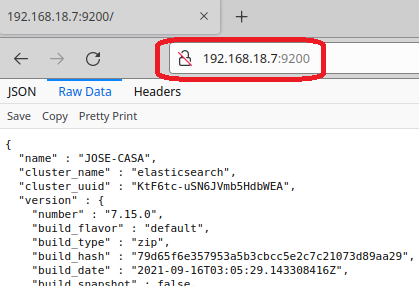
- Abre el fichero de configuración de Kibana:
kibana/config/kibana.yml -
Modifica o añade la línea
server.host: "0.0.0.0" -
Reinicia Kibana
- Comprueba que puedes acceder a Kibana desde otra máquina. Por ejemplo, la máquina virtual
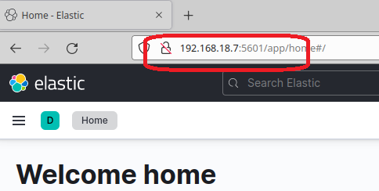
Nos aparecerán mensajes de advertencia de que no tenemos la seguridad activada. Los ignoramos.
Configuración de Ubuntu con Metricbeat¶
Sobre una máquina de Ubuntu/Xubuntu:
-
Comprobar que se ve con la máquina donde tenemos Elastic y Kibana. Lo más sencillo es desde el navegador, acceder a la ip donde están los servidores(tu máquina anfitrión u otra máquina virtual) a los puertos 9200 y 5601
-
Instalamos algunos servicios en Ubuntu:
sudo apt install ssh sudo apt install apache2 sudo apt install mysql-server -
Descargar Metricbeat en Ubuntu y descomprimir
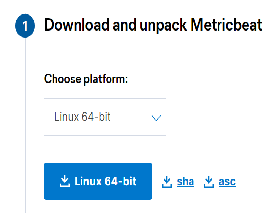
- Abre el fichero de configuración
metricbeat.yml - Vamos a configurar Metricbeat para que envíe a Kibana las plantillas de los Dashboard. Cambia la configuración:
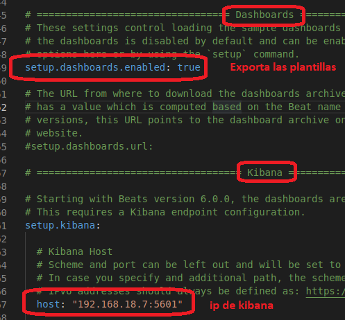
- Le indicamos donde está Elasticsearch, que será, el consumidor de los datos
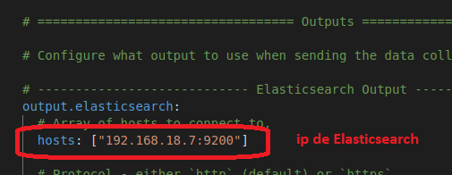
Configuración de los módulos de Metricbeat¶
Los Beats tienen diferentes módulos que les da diferentes capacidades, la lista de módulos disponibles para Metricbeat la tenemos en:
https://www.elastic.co/guide/en/beats/metricbeat/current/metricbeat-modules.html
Vemos que la lista es muy completa. Nosotros vamos a probar alguno.
- Es necesario que Elasticsearch y Kibana estén iniciados
- Los módulos disponibles los podemos ver mediante
./metricbeat modules list
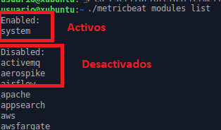
-
Vemos que tenemos por defecto activo “system”. Para configurarlo, editamos el fichero
metricbeat/modules.d/system.yml. Podemos activar diferentes métricas en el módulo, En la documentación oficial podemos ver los detalleshttps://www.elastic.co/guide/en/beats/metricbeat/current/metricbeat-module-system.html
-
Activamos alguna métrica extra y cambiaremos los tiempo de consulta para poder visualizar antes los datos
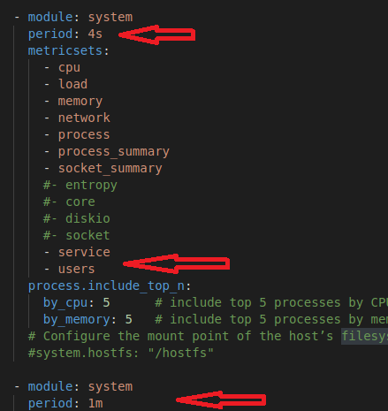
-
Vamos a realizar un test del fichero de configuración antes de iniciar el servicio para comprobar que todo es correcto
./metricbeat test config -c metricbeat.yml -
Iniciamos el servicio
./metricbeat -c metricbeat.yml -
Desde este momento se monitoriza el servidor. Vamos a ver los resultados en kibana desde el menú Observabitity y seleccionamos nuestro servidor
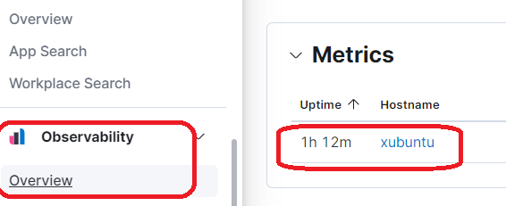
- Podemos ver diferentes métricas
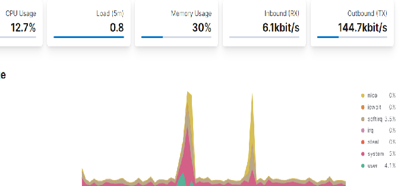
- Si vamos al menú dashboards, vemos que nos ha importado una serie de plantillas preconfiguradas
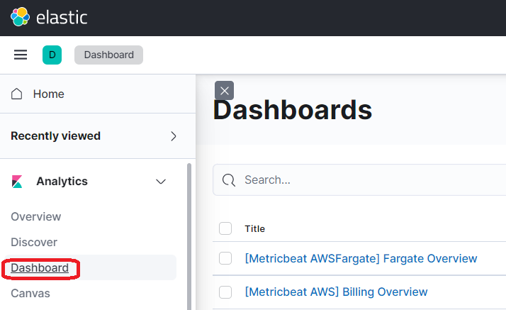
- Podemos probar los diferentes Dashboards del módulo system
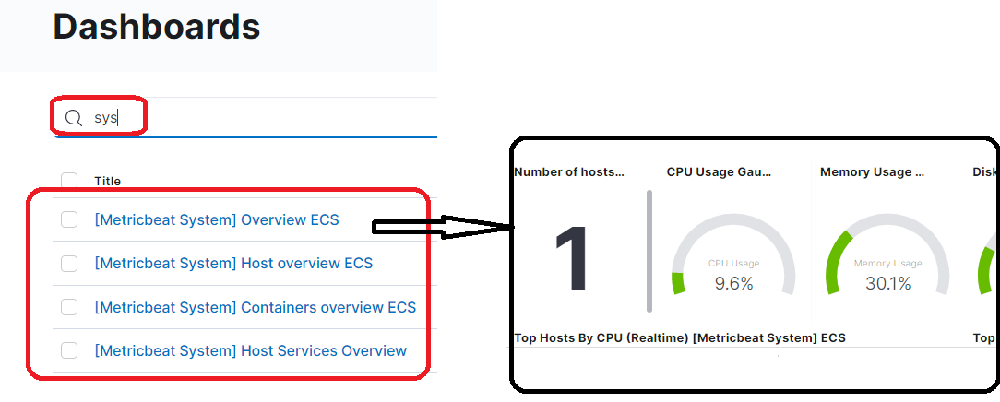
Ejercicio¶
Ejercicio Metricbeat
Captura de pantalla de los Dashboards probados y entrega un fichero pdf
Activar nuevo módulo: Módulo Apache¶
Vamos a monitorizar Apache. Para ello:
- Paramos metricbeat
-
Activamos el módulo de apache
./metricbeat modules enable apache -
Comprobamos que está activo
./metricbeat modules list
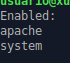
- Iniciamos metricbeat y podemos ir al dashboard de Apache
./metricbeat -c metricbeat.yml
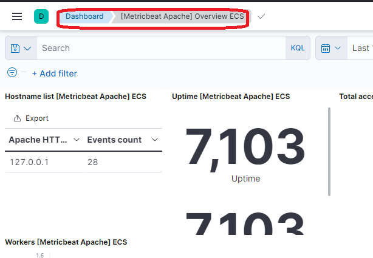
Ejercicio¶
Ejercicio metricbeat Apache
Captura de pantalla con el dashboard de Apache
Ejercicio opcional¶
Ejercicio metricbeat opcional
-
Activa el módulo de Mysql y visualiza el dashboard correspondiente
-
Instala docker, y levanta dos docker en la máquina. Activa el módulo de docker de metricbeat y visualiza su dashboard
Filebeat para la monitorización de logs de sistema¶
Introducción¶
Es el más importante de los beats. Nos permite realizar la ingesta de los diferentes logs de los sistemas y enviarselos a Elasticsearch, o si es necesario su transformación, a Logstash. Su documentación la tenemos en
https://www.elastic.co/guide/en/beats/filebeat/current/index.html
Vamos a iniciarlo de forma simple utilizando los módulos del beat, pero podemos realizar la ingesta de cualquier fichero que queramos.
Instalación¶
-
Vamos a la página oficial
https://www.elastic.co/es/downloads/beats/filebeat
-
Seleccionar la versión para nuestro Ubuntu
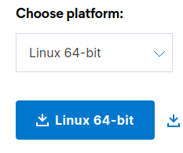
- Descomprimir el fichero y editar el fichero de configuración filebeat.yml
- Configuramos los mismos parámetros que en metricbeat
-
Podemos ver los módulos disponibles
./filebeat modules list -
Vamos a probar los módulos de system y apache
./filebeat modules enable apache system -
Comprobamos si la configuración es correcta
./filebeat test config -c filebeat.yml -
Iniciamos filebeat
./filebeat -c filebeat.yml
Acceso desde Kibana al registro del log syslog¶
Vamos a realizar alguna accesos y tareas para luego monitorizarlo desde Kibana
-
Acceso vía ssh. Desde la máquina anfitrión accedemos mediante ssh
ssh usuario@192.168.18.126 (la ip de ubuntu) -
Podemos hacer alguna tarea sudo
sudo apt update sudo adduser pepe -
Vamos al Dashboard de Kibana donde nos tiene que haber importado las plantillas asociadas a Filebeat
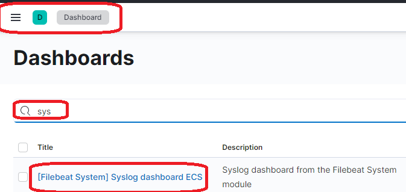
- Podemos probar diferentes dashboards
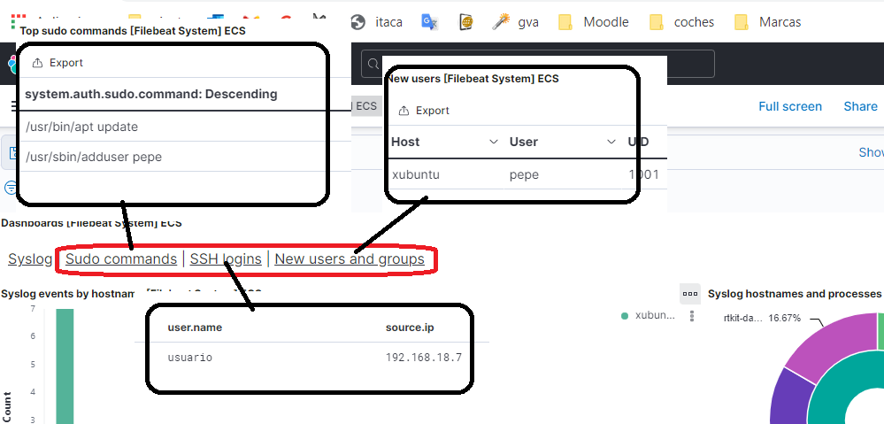
Visualización desde Kibana al log de Apache¶
- Acceder desde distintos navegadores(firefox, chrome…) a nuestro servidor Apache instalado anteriormente.
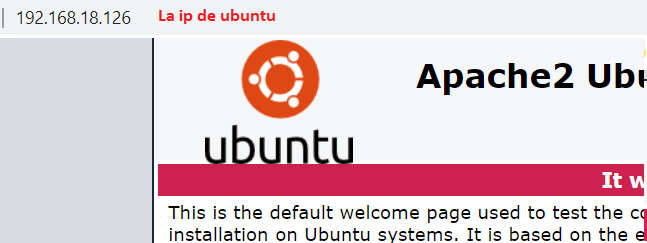
- Probamos si funciona
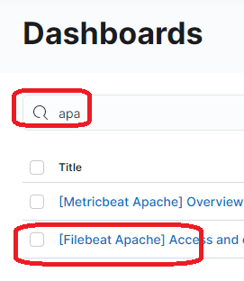
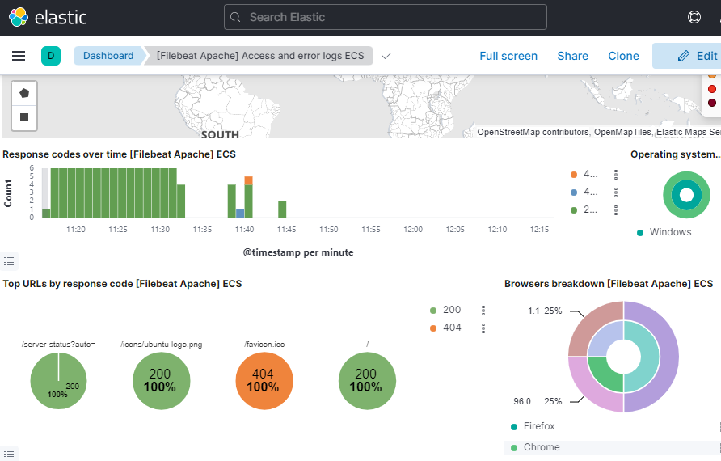
Ejercicio¶
Ejercicio Filebeat
Entrega las capturas de pantalla con los dashboard de Filebeat
Ejercicio opcional
Activa el módulo de mysql y prueba crear una base de datos y realizar consultas sobre ella. Monitoriza mediante Kibana el log. Explica todo el proceso y captura de pantallas de resultados